July 1997
The point of our trip to China was to train the drilling people to use the latest version of DIMS. That was the software I used to support.
We trained in the office for two days, then went out on the rig for two days. That was very exciting!
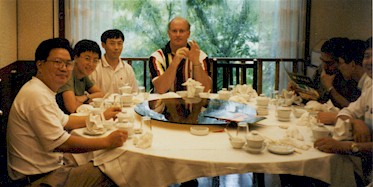
At lunch with my students: Zhang (fish head guy), Cindy, ____, John,
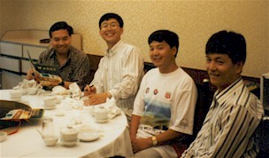
Ceasar, Wang, Leon, and Dong
This was the meal when they tried to honor me by offering me the fish head to eat. I had to be a rude American and decline, so Zhang anxiously gobbled it up. Ick!
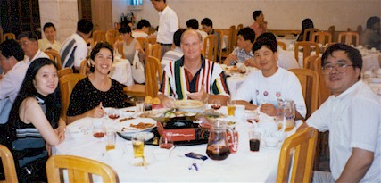
Another lunch with friends.
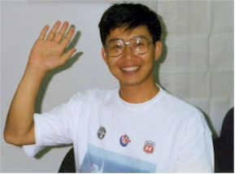
My new friend Wang, all smiles.
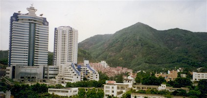
Our hotel to the far left, and a view of the area.
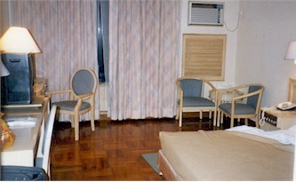
My hotel room. The site of my first "hairdryer massacre." Turns out you need both a plug adapter and a voltage converter.
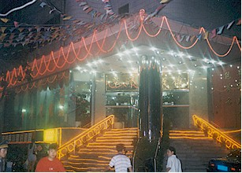
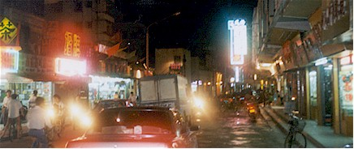
Street scenes on a shopping trip with Julie
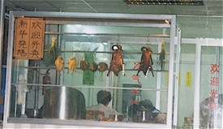
Anyone hungry for a snack?
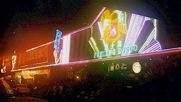
The "Feeling Disco" which was conveniently located near the office.
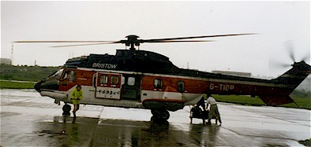
The helicopter we took for a LONG way over the South China Sea.
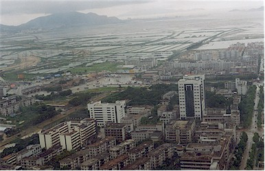
A view of Shekou from the 'copter
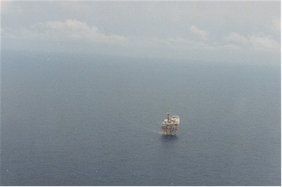
This is the first of two rigs I visited, the Xijiang 30-2. I spent the night on this rig, it was a really nice one.
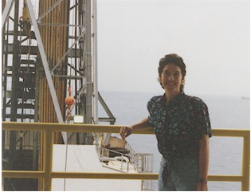
Me on the rig
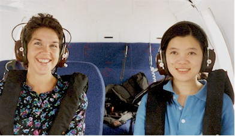
Me & Julie in the helicopter on the ride back
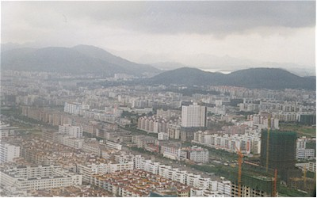
More views from the sky
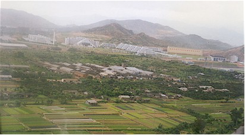
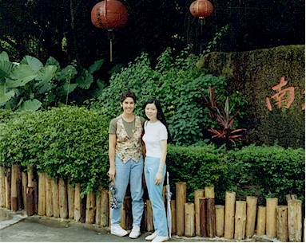
This is me and my good friend Julie. We had worked together via phone and e-mail for years, but this was our first meeting. She turned out to be a very good friend and got to visit us in Bartlesville later on as well.
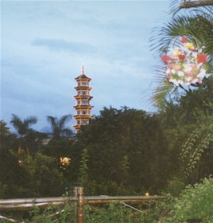
On our last night, Julie took us to "Splendid China."
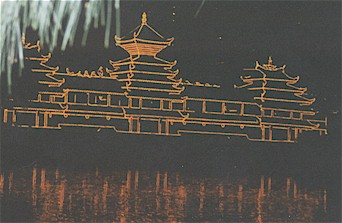
It was an amusement-park sort of place that represented all the areas of China.
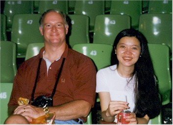
Here we are, ready for the big show at the end of the night.
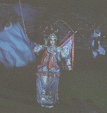
Part of the show
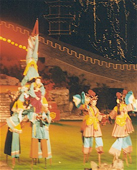
Acrobats on stilts. Because being an acrobat just wasn't hard enough.
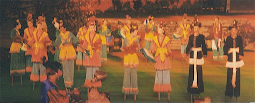
More action on stilts
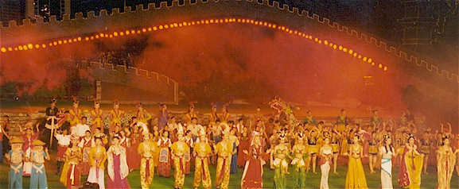
Part of the Grand Finale